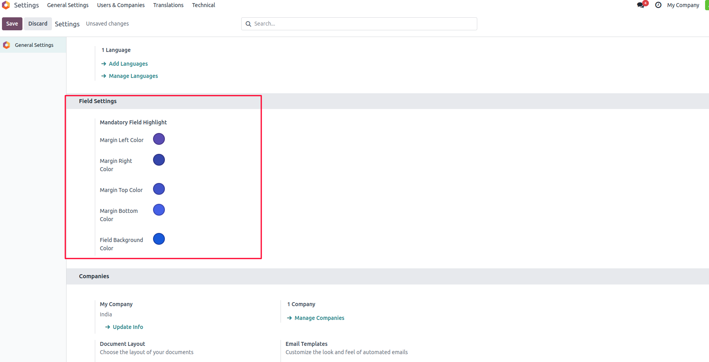
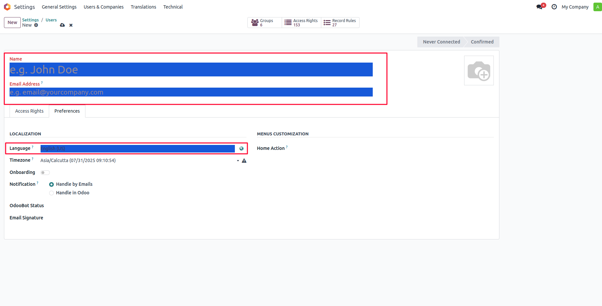

This module enhances user experience by visually highlighting mandatory (required) fields across Odoo forms. It helps users quickly identify which fields are required before saving a record, reducing form submission errors and improving data entry efficiency.


Once installed, the module will automatically apply a highlight effect to all required fields in form views. The highlight color can be customized in the system settings or configuration file.
Apagen Solutions